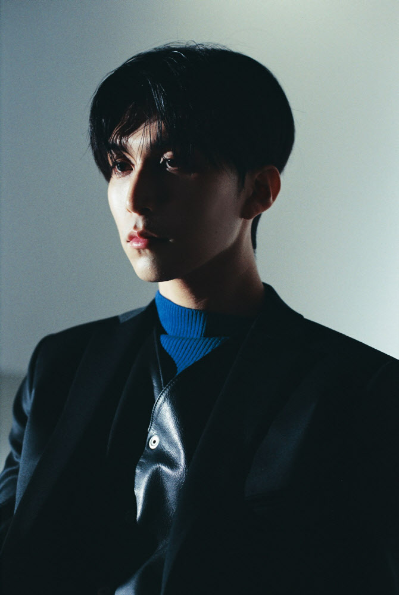

콜드는 대한민국의 R&B 가수. offonoff의 보컬을 맡고 있다.
DEAN에 이어 두번째로 COLORS 에 출연한 한국 가수가 되었다. 삼성 갤럭시 버즈+ 광고에 출연하였다. 광고 삽입곡은 마음대로이다.
네이버 NOW.에서 월요일 밤 10시에 라이브 오디오쇼 'Colde Night'을 진행중이다. 주로 사연을 읽어 주고 사연과 관련된 RnB/소울 음악을 추천해 준다.
개인 유튜브에 브이로그나 커버 영상들이 올라온다.
2020년 7월 20일, 기존의 자신의 레이블 '웨이비 (Wavy)'와 별개로 '레이어드 아일랜드 (Layered Island)' 레이블을 새로 런칭했으며, 07월 24일에 발표된 Layered Island 레이블의 1호 아티스트는 경제환 (먹)이다.